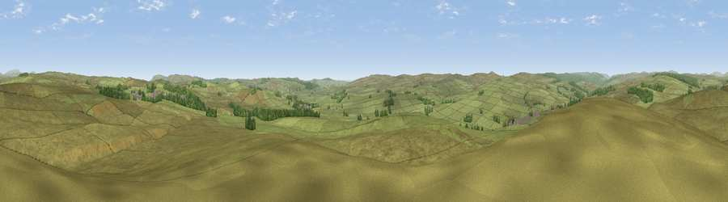

Viewpoint near Otterburn
#16238 in England · top 42% of its area beats it · near Otterburn · open accessWhere it is
The exact computed spot (NY 87375 95575). Click the marker for map links.
Public access: this spot lies on mapped open-access land (CRoW Act 2000) — you may roam here on foot. Computed from Natural England's CRoW access layer and OpenStreetMap rights of way — not the legal definitive map. Always verify locally.
The view, rendered

A 360° render of this exact spot computed from the terrain model, tree cover and land cover — summer colours, afternoon light, calibrated against photographs of famous viewpoints. Real trees, hedges and buildings will differ in detail.
The panorama
Grey silhouette: terrain skyline in each direction (720 bearings, Earth curvature and refraction included). Dashed green: skyline with trees (+15 m) and buildings (+8 m) as obstacles. Blue strip: how far the ground is visible on each bearing.
Where the view opens
Wedge length = distance to the farthest visible ground on that bearing (vegetation-aware). Rings at 10, 25 and 50 km.
What fills the view
96% grassland · 4% woodland
Angular shares of the visible panorama (visual magnitude), not map area. Landscape diversity 0.09 (0–1 Shannon).
Key numbers
More beautiful places nearby
The staircase of upgrades: each row has a higher view potential than everything closer. Driving times are estimates from straight-line distance, calibrated against real road routing — check an actual route before setting out.
| Place | Direction | Drive | Score |
|---|---|---|---|
| Viewpoint near Rochester | NNE · 4 km | ~8 min | 56.1 |
| Viewpoint c11996_7785 | NNE · 5 km | ~11 min | 65.5 |
| Padon Hill | WSW · 6 km | ~13 min | 72.6 |
| Cold Law | NNE · 9 km | ~18 min | 76.1 |
| Darden Rigg | E · 11 km | ~22 min | 77.0 |
| Ellis Crag | WNW · 14 km | ~25 min | 77.2 |
| Viewpoint near Hepple | ENE · 14 km | ~26 min | 82.4 |
| Viewpoint c12273_7856 | NNE · 19 km | ~32 min | 83.7 |
55.25419, -2.20016 · source: screening · position refined by local search. Computed location — check access rights before visiting.